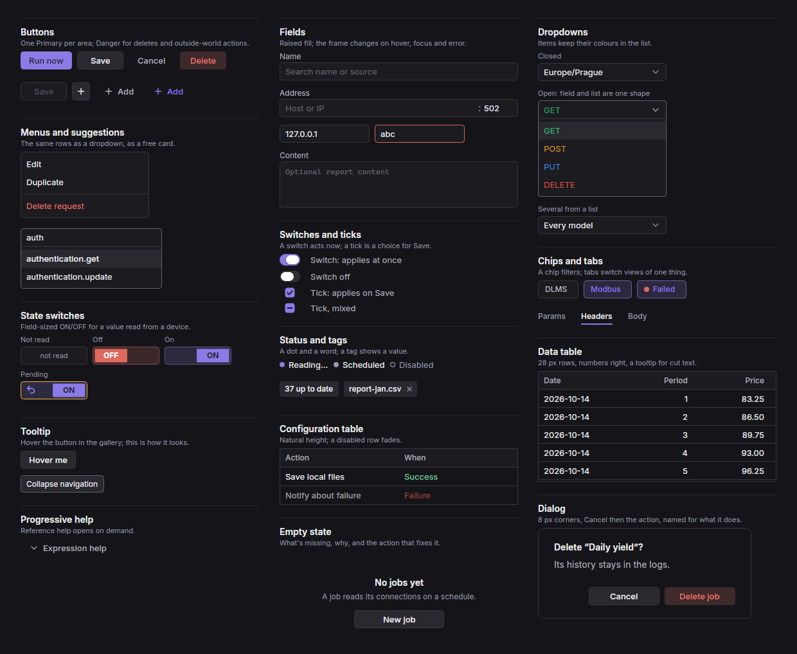
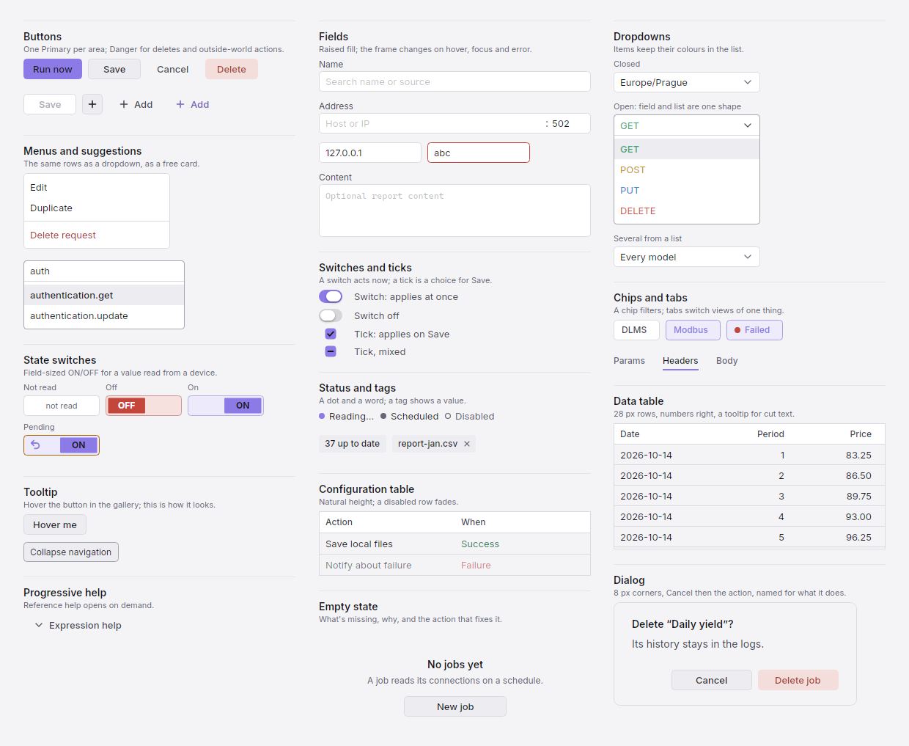
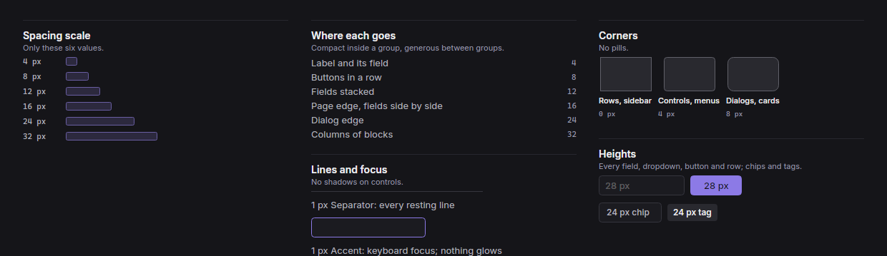
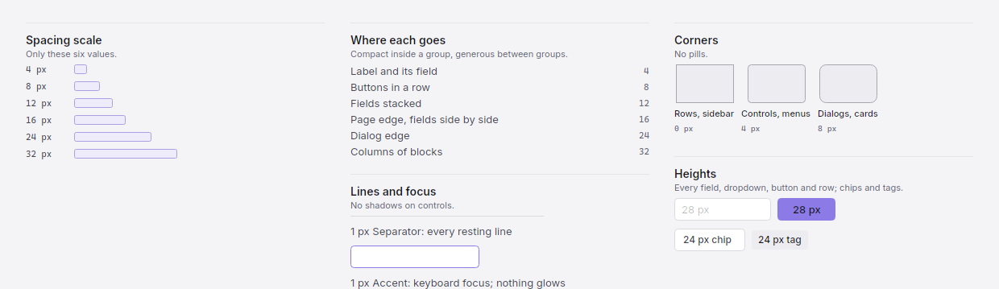
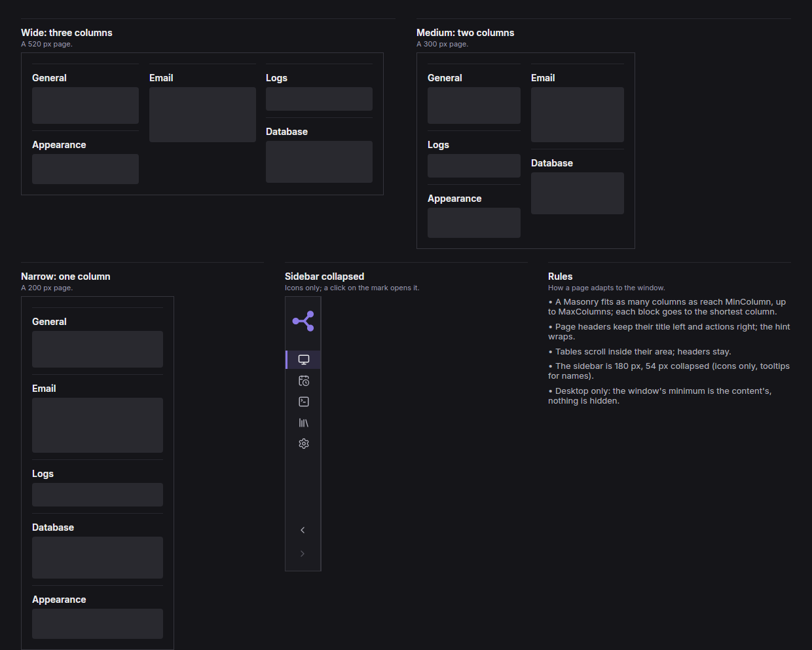
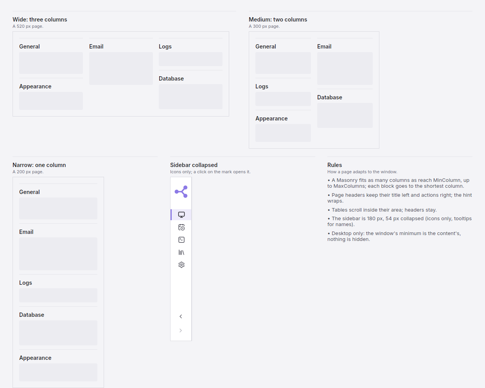

The Shade design system
A dark-first design system for desktop work tools, with a matching light mode. Thirteen colour roles, one accent, Inter at five sizes, a 4 px grid and 28 px controls, built as Avalonia components.
<PackageReference Include="Shade" Version="1.0.0" />
01 / Colors
Colour roles
Thirteen roles named by their job, plus the shades the rules make from them. Every value below is read from the code, for the mode you're viewing.
Surfaces
From the page to the lines on it.
Text
Three steps of emphasis, and Disabled.
Accent
The app's one colour and what the rules make from it.
Status
Fixed per mode; never the accent.
Rules
Shades are computed, never stored.
- Tint: 15 % of a colour over Raised.
- Hover: 10 % lighter.
- On a colour: dark ink or white, whichever reads better.
- Lifted text: accent and danger text move toward the high-contrast end until 4.5:1.
- A status colour always sits next to its word.
02 / Typography
Type scale
Inter for the interface, Cascadia Code for values. Five sizes, nothing in between.
Scale
A size between steps is rounded to the nearest.
Weights
Weight carries emphasis before size does.
Mono
Cascadia Code without ligatures: addresses, registers, code.
Writing
How labels read.
- Sentence case: “Create job”, not “Create Job”.
- Actions are verbs and never end in dots: “Sync”.
- Work in progress keeps them: “Connecting…”.
03 / Components
Components
Rendered from the real controls in the mode you're viewing. One implementation each, every state shown.


| Component | Code | Rule |
|---|---|---|
| Buttons | Btn, Capsule, IconButton | One Primary per area; Danger for deletes and outside-world actions |
| Fields | Field, HostPortField, SuggestionField | Raised fill; only the frame changes |
| Dropdowns and menus | ChoiceButton, MultiChoice, Menu | Open, field and list are one shape |
| Switches and ticks | Switch, Tick, StateToggle | A switch acts now; a tick is a choice for Save |
| Chips, tabs, tags, status | FilterChip, TextTabs, Tag, StatusBadge | A colour always comes with a word |
| Tables | Workbench.Table, CompactTable | 28 px rows, numbers right, cut text in a tooltip |
| Overlays | ToolTip, Ask, Dialog, ColorGrid | Cancel, then the action named for what it does |
04 / Spacing · Radii
Spacing and corners
A 4 px grid, two corner sizes, two heights. Compact inside a group, generous between groups.
Spacing scale
Only these six values.
Where each goes
Between what.
| Label and its field | 4 |
| Buttons in a row | 8 |
| Fields stacked | 12 |
| Page edge, fields side by side | 16 |
| Dialog edge | 24 |
| Columns of blocks | 32 |
Corners
No pills, no shadows.


05 / Responsive
Responsive
Blocks reflow into as many masonry columns as fit; the sidebar collapses to its icons. This page does the same: resize the window.

